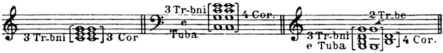
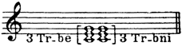
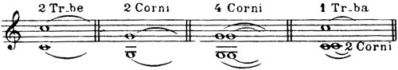
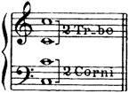

配器法原理：繁體中文版
銅管的重複配置
銅管的重複配置
銅管組最常見的重複配置，是讓法國號和弦與小號或長號所奏的相同和弦同時並置。法國號柔和圓潤的音質能增厚聲音，並緩和小號、長號尖銳而有穿透力的音色：-86-

- 銅管和弦的並置重複，三例由左至右：3支長號與3支法國號奏相同和弦；
- 3支長號與低音號的四聲部和弦，由4支法國號重複；
- 2支小號配3支長號與低音號，其中4支法國號重複下方和弦。
- Tr-bni＝長號，Cor.＝法國號，Tr-be＝小號，Tuba＝低音號；
- 括號保留各音的歸屬。
小號與長號也可以作類似的並置：

3 Tr-be＝3支小號，3 Tr-bni＝3支長號：兩組在相同音高重複同一個三聲部和弦。
不過這種做法較少見，因為它把銅管組中音量最強的兩類樂器結合在一起。
在管弦樂寫作中，銅管經常用來在兩個或三個八度音域中維持長音，這項用途不可忽略。這類持續音通常交給兩支小號，或兩支、四支法國號，以八度（或相隔兩個八度）配置。有時也由小號與法國號共同形成八度：

- 持續音的四種八度配置，由左至右：2 Tr-be＝2支小號；
- 2 Corni＝2支法國號；
- 4 Corni＝4支法國號，每個音高兩支同奏；
- 1 Tr-ba與2 Corni＝1支小號及2支法國號，法國號同度齊奏下方音。
連結線保留持續關係。
長號的音色厚重，因此很少參與這類組合。跨兩個八度的持續音，通常如此分配：

跨兩個八度的持續音配置：2 Tr-be＝2支小號，2 Corni＝2支法國號。
上方小號組與下方法國號組各奏八度，中間音由兩組共同重複，兩端各一個音。
中間音重複配置造成的些許不平衡，可由音色混合來彌補，使整個和音獲得一定程度的統一。
銅管和聲的範例：
a）
獨立和弦：
《雪孃》排練號74：3支長號、2支法國號。
《雪孃》排練號140：3支長號、2支法國號。不同樂器組交替演奏和弦（參見譜例244）。
《雪孃》排練號171：全體銅管；稍後為3支長號（參見譜例97）。
《雪孃》排練號255：4支法國號（悶塞音）。-87-
譜例129：《雪孃》，排練號289之前：4支法國號。
《雪孃》排練號289：全體銅管。
*《薩特闊》，排練號9之前：全體銅管（聲部包夾）。
譜例130：《薩特闊》排練號175：混合音色（並置），3支法國號＋3支小號。
《薩特闊》，排練號338之前：除低音號之外的全體銅管。
譜例131：《薩特闊》排練號191-193（全體銅管）。
譜例132：《聖誕夜》，排練號180之前：全體銅管加弱音器。
《聖誕夜》排練號181：4支法國號＋3支長號＋低音號（參見譜例237）。
*《沙皇的新娘》排練號178：弦樂與銅管交替（參見譜例242）。
*譜例133：《薩爾坦王的故事》排練號102第7小節：2支小號、2支長號＋4支法國號（並置）。
*《塞爾維莉亞》排練號154：多種銅管樂器。
*《隱城基捷日傳說》排練號130：3支小號、長號與低音號。
譜例134：《隱城基捷日傳說》排練號199：短促和弦（並置）。
*譜例135：《金雞》排練號115：法國號、長號（包夾）。
b）
和聲基礎：
譜例136：《雪孃》排練號79第6小節：4支法國號。
《雪孃》排練號231：3支長號，柔和甜美（參見譜例8）。
《安塔爾》排練號64-65：4支法國號；稍後為3支長號（參見譜例32）。
譜例137：《塞爾維莉亞》排練號93：全體銅管。
*譜例138：《薩爾坦王的故事》排練號127：4支加弱音器的法國號＋3支長號與低音號，後兩者也加弱音器，pp甚弱。
《薩爾坦王的故事》，排練號147之前：全體銅管ff甚強（2支雙簧管與英國管在此並非重點）。
*《總督大人》排練號136第9小節：4支法國號，接著是長號與2支法國號。
*譜例139：《隱城基捷日傳說》排練號158：小號、長號。
譜例140：《隱城基捷日傳說》排練號248：3支長號。
《隱城基捷日傳說》，排練號362之前：全體銅管。
查看英文原文
Duplication in the brass.
Duplication in the brass group is most frequently effected by placing a chord for horns side by side with the same chord written for trumpets or trombones. The soft round quality of the horns intensifies the tone, and moderates the penetrating timbre of the trumpets and trombones:-86-
Similar juxtaposition of trumpets and trombones:
is not so common, as this unites the two most powerful agents in the group.
In handling an orchestra the brass is frequently employed to sustain notes in two or three octaves; this sphere of activity must not be ignored. The tenuto is generally given to two trumpets, or to two or four horns in the octave, (in double octaves). The octave is sometimes formed by trumpets and horns acting together:
The trombone with its ponderous tone rarely takes part in such combinations. Sustained notes in double octaves are usually apportioned thus:
The imperfect balance arising from the duplication of the middle note is compensated for by the mixture of timbres, which lends some unity to the chord.
Examples of harmony in the brass:
a）
Independent chords:
Snegourotchka 74—3 Trombones, 2 Horns.
"140—3 Trombones, 2 Horns. Chords in different groups alternately (cf. Ex. 244).
"171—Full brass; further on 3 Trombones (cf. Ex. 97).
"255—4 Horns (stopped). -87-
No. 129. Snegourotchka, before 289—4 Horns.
"289—Full brass.
* Sadko, before 9—Full brass (enclosure of parts).
No. 130. Sadko 175—Mixed timbres (juxtaposition) 3 Horns + 3 Trumpets.
"before 338—Full brass except Tuba.
No. 131."191-193 (Full brass).
No. 132. The Christmas Night, before 180—Full muted brass.
"""181—4 Horns + 3 Trombones + Tuba (cf. Ex. 237).
* The Tsar's Bride 178—Strings and brass alternately (cf. Ex. 242).
* No. 133. Tsar Saltan 102, 7th bar.—2 Trumpets, 2 Trombones + 4 Horns (juxtaposition).
""230—Full brass, thickly scored (cf. Table of chords No. II at the end of Vol. II, Ex. 12).
* Servilia 154—Various brass instruments.
* Legend of Kitesh 130—3 Trumpets, Trombone and Tuba.
No. 134. Legend of Kitesh 199—Short chords (juxtaposition).
* No. 135. The Golden Cockerel 115—Horns, Trombones (enclosure).
b）
Harmonic basis:
No. 136. Snegourotchka 79, 6th bar.—4 Horns.
"231—3 Trombones, soft and sweet (cf. Ex. 8).
Antar 64-65—4 Horns; later 3 Trombones (cf. Ex. 32).
* Shéhérazade, 1st movement, A, E, H, K, M—Harmonic bases of different power and timbre (cf. Ex. 192-195).
No. 137. Servilia 93—Full brass.
* No. 138. Tsar Saltan 127—4 muted Horns + 3 Trombones and Tuba con sord. pp.
""before 147—Full brass ff (the 2 Oboes and Eng. horn are of no particular importance).
* Pan Voyevoda 136, 9th bar.—4 Horns, then Trombones, 2 Horns.
* No. 139. Legend of Kitesh 158—Trumpets, Trombones.
No. 140."""248—3 Trombones.
"""before 362—Full brass.